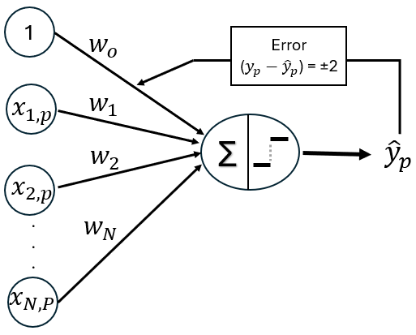
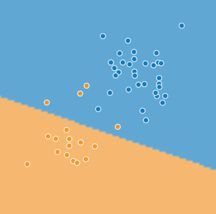
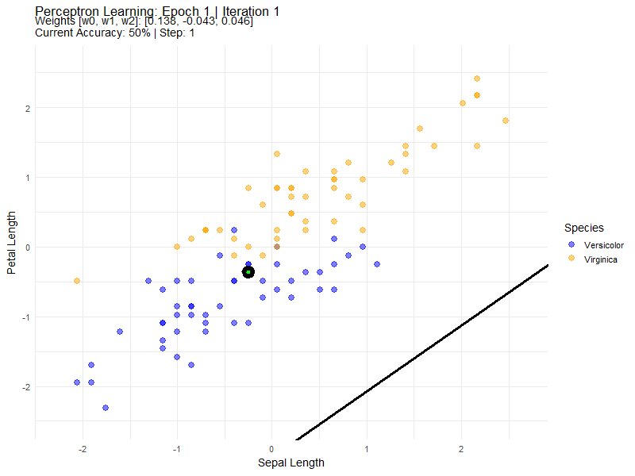
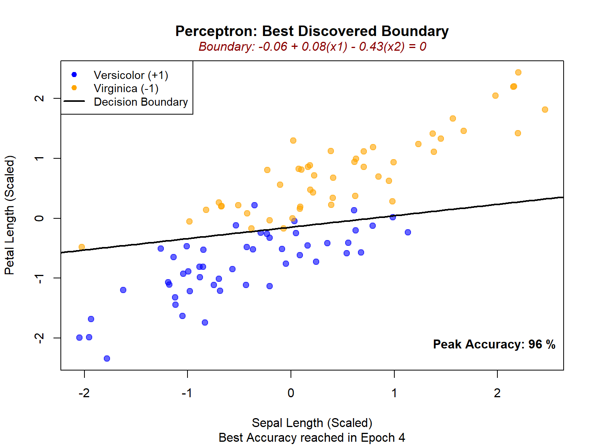

# load the packages
library(tidyverse)
library(gganimate)Perceptron: the first artificial neuron
Statistics
The perceptron is one of the earliest and simplest models of an artificial neuron, introduced first by Warren McCulloch and Walter Pitts in 1943, and later by Frank Rosenblatt in 1958, as a computational approach inspired by biological neurons.
The perceptron
The perceptron is one of the earliest and simplest models of an artificial neural network (McCulloch 1943; Rosenblatt 1958). Conceptually, it corresponds to a single artificial neuron that makes binary decisions. Despite its simplicity, the perceptron introduced the core ideas of weighted inputs, linear decision boundaries, and supervised learning for classification tasks—ideas that remain central to modern deep learning.
At its heart, the perceptron learns to separate data into two classes by finding a linear boundary that divides the input space. Each prediction is obtained by combining the inputs linearly and passing the result through a threshold function that produces a discrete output.
How it works
The Perceptron can be viewed as a simple directed graph, with edges connecting each input to the output and parameterized by weights. The output of the perceptron depends both on the values of the input nodes and on the weights associated with the incoming edges, which control how strongly each input influences the final decision.

Basic set up and notation
The Perceptron takes multiple input features, multiplies each by an associated weight, sums these weighted inputs along with a bias term, and then applies a threshold decision (activation) function to determine the output class. This process can be described compactly using vector notation.
Suppose our dataset consists of \(P\) input-output pairs
\[(\mathbf{x_1}, y_1), (\mathbf{x_2}, y_2), ..., (\mathbf{x_P}, y_P)\]
or equivalently,
\[\left\{ \left(\mathbf{x}_{p},y_{p}\right)\right\} _{p=1}^{P}\]
where \(\mathbf{x_p}\) denotes the input feature vector for the \(p-\)observation and \(y_p \in \{-1, +1\}\) represents the corresponding binary target label.
Each input \(\mathbf{x_p}\) is a column vector of length \(N + 1\), where the leading component is fixed to 1 in order to incorporate the bias term directly into the model:
\[\mathbf{x_p} = \begin{bmatrix} 1 \\ x_{1,\ p} \\ x_{2,\ p} \\\vdots \\ x_{N,\ P} \end{bmatrix}\]
The model parameters—the bias and feature weights—are collected into a single column vector:
\[\mathbf{w} = \begin{bmatrix} w_0 \\ w_1 \\ w_2 \\ \vdots \\ w_N \end{bmatrix}\]
The target labels are represented by a vector \(\mathbf{y}\) of length \(P\) :
\[\mathbf{y} = \begin{bmatrix} y_1 \\ y_2 \\ \vdots \\ y_P \end{bmatrix}\]
Linear Combination
For a single observation \(p\), the perceptron computes a net input \(z_p\) by taking the dot product of the weight vector and the input vector:
\[z_p = \mathbf{w}^{\mathsf{T}}\mathbf{x}_p\]
where the superscript \(\mathsf{T}\) denotes transposition.
Expanding this expression makes the computation explicit:
\[\begin{aligned} z_p &= \begin{bmatrix} w_0 & w_1 & \cdots & w_N \end{bmatrix} \begin{bmatrix} 1 \\ x_{1,\ p} \\ x_{2,\ p} \\\vdots \\ x_{N,\ P} \end{bmatrix} \\ &= (w_0 \cdot 1) + (w_1 \cdot x_{1,p}) + \dots + (w_N \cdot x_{N,P}) \\ &= \underbrace{\enspace w_0 \enspace}_{\text{bias}} + \underbrace{\sum_{n=1}^{N} w_{n} \cdot x_{n, p}}_{\text{sum of weights}} \end{aligned}\]
Thus, the net input is simply a weighted sum of the input features plus a bias term.
Activation function and decision boundary
In the classic perceptron, the activation function \(f(\cdot)\) is a step function, which maps the continuous net input to one of two discrete class labels. One possible choice is the sign function, which assigns a label depending on whether the net input is non-negative or negative, as follows:
\[\hat y_p = \text{sign}(z_p) = \begin{cases} 1 & \text{if } z_p \ge 0 \\ -1 & \text{if } z_p < 0 \end{cases}\]
Through this simple rule, the perceptron partitions the input space into two regions separated by a linear decision boundary, classifying inputs on one side as \(+1\) and those on the other side as \(-1\), which is why it is considered a linear binary classifier; this decision boundary is defined as the input vectors for which the net input is zero, that is, \(\mathbf{w}^{\mathsf{T}}\mathbf{x}_p = 0\).
The weight update rule
The perceptron learning rule is an example of supervised training. For each input, the network produces an output (\(\hat y_p\)), which is compared to the target value \(y\). The learning rule then updates the network’s weights of the network in order to move the network output closer to the target.
Let \(\mathbf{w}^{\text{old}}\) denote the weight vector before the update, and \(\mathbf{w}^{\text{new}}\) denote the weight vector after the update. The learning rule is expressed as:
\[\mathbf{w}^{\text{new}} = \mathbf{w}^{\text{old}} + \eta \, (y_p - \hat{y}_p) \, \mathbf{x}_p\]
where \(\eta > 0\) is the learning rate, controlling the step size of each update. The error term \((y_p - \hat{y}_p)\) is a discrete scalar that determines the nature of the weight update.
The perceptron learning rule adjusts the weight vector in the direction that reduces the error for the specific example \(p\):
Correct prediction (\(y_p = \hat{y}_p\)): Since \((y_p - \hat{y}_p) = 0\), the update term is zero. No change is made, as the model’s current boundary already correctly classifies the point.
Incorrect prediction (\(y_p \neq \hat{y}_p\)): The term \((y_p - \hat{y}_p)\) becomes either \(+2\) or \(-2\). The weights are “nudged” in the direction of \(y_p \mathbf{x}_p\), moving the decision boundary.
Convergence and separability
Training begins by assigning initial values to the network parameters. The perceptron learns by iteratively adjusting its weights to minimize classification errors. Learning proceeds in epochs, with each epoch representing a complete pass through the training dataset. During an epoch, the order of training examples may be randomly shuffled to improve generalization and prevent bias from the data sequence. Because weight updates are made incrementally after each individual example, multiple epochs are typically required for the decision boundary to gradually adjust and better separate the data. Whether this process eventually halts—achieving convergence—depends entirely on the linear separability of the training set.
When the classes are linearly separable, meaning they can be perfectly divided by a straight line in two dimensions or a hyperplane in higher dimensions, the Perceptron Convergence Theorem guarantees that the algorithm will reach a finite weight vector that correctly classifies all training examples. At this point, the weights stabilize and no further updates occur. Conversely, if the data are not linearly separable, no such solution exists. The perceptron will continue updating its weights indefinitely, repeatedly shifting the decision boundary in an attempt to correct misclassifications. Fixing one misclassified point may cause another to become misclassified, producing oscillatory or “jittering” behavior. In practice, training on non-separable data is terminated after a fixed number of epochs to prevent unbounded computation.


Perceptron example with R
Data Preparation
We’ll use the famous Iris dataset, focusing on two species (Versicolor and Virginica) to create a binary classification problem.
# load the dataset
data(iris)
df <- iris[iris$Species != "setosa", ]
df$y <- ifelse(df$Species == "versicolor", 1, -1)
Feature Scaling
Standardization ensures all features have mean = 0 and standard deviation = 1. This helps the Perceptron converge faster and prevents features with larger scales from dominating the learning process.
# Feature Scaling
df_scaled <- df
df_scaled[, 1:4] <- scale(df[, 1:4])
df_scaled_final <- df_scaled[, c("Sepal.Length", "Petal.Length", "y")]# Initial setup
X <- as.matrix(df_scaled_final[, 1:2])
X_augmented <- cbind(1, X) # leading 1 for bias
y_vector <- df_scaled_final$yThe augmented matrix includes a column of 1s, which allows us to incorporate the bias term \(w_o\) directly into the weight vector.
Implement the Perceptron Algorithm
Sign Activation Function
sign_func <- function(z) {
ifelse(z >= 0, 1, -1)
}
Perceptron Training Function
The perceptron algorithm repeatedly cycles through training examples in a randomized order, iteratively adjusting weights only when a misclassification occurs. This process continues until the model achieves convergence (zero errors) or reaches a preset maximum number of epochs. Because the updates are incremental, a single data point may be processed multiple times across different epochs, gradually nudging the decision boundary until it successfully partitions the classes with a valid separating hyperplane.
fit_perceptron <- function(X_aug, y, eta = 0.05, n_iter = 10) {
n_features <- ncol(X_aug)
n_obs <- nrow(X_aug)
# Initialize weights
set.seed(842)
w <- rnorm(n_features, mean = 0, sd = 0.1)
history_list <- list()
epoch_errors <- numeric(n_iter)
step_total <- 0
for (epoch in 1:n_iter) {
# --- Shuffle data at the start of every epoch ---
indices <- sample(n_obs)
X_shuffled <- X_aug[indices, ]
y_shuffled <- y[indices]
error_count <- 0
for (p in 1:n_obs) {
step_total <- step_total + 1
x_p <- X_shuffled[p, ]
y_p <- y_shuffled[p]
# Linear Combination
z_p <- as.numeric(t(w) %*% x_p)
y_hat <- sign_func(z_p)
is_error <- (y_hat != y_p)
if (is_error) {
# Perceptron Update Rule
w <- w + eta * (y_p - y_hat) * x_p
error_count <- error_count + 1
}
# Calculate accuracy on full dataset for tracking
predictions <- sign_func(X_aug %*% w)
current_accuracy <- sum(predictions == y) / length(y) * 100
# Record history
history_list[[step_total]] <- data.frame(
Step = step_total,
Epoch = epoch,
Iteration = p,
w0 = w[1], w1 = w[2], w2 = w[3],
x1_val = x_p[2], x2_val = x_p[3], # Tracks the specific point being tested
is_error = is_error,
current_acc = current_accuracy
)
}
epoch_errors[epoch] <- error_count
cat(sprintf("Epoch %d: %d errors\n", epoch, error_count))
if (error_count == 0) {
cat(sprintf("--- Converged early at Epoch %d ---\n", epoch))
break
}
}
return(list(
weights = w,
errors = epoch_errors[1:epoch],
history = bind_rows(history_list)
))
}
Let’s train the perceptron model for 30 epochs and record how many times the weights are updated during each full pass through the training data in each Epoch (Epoch error).
# Training
results <- fit_perceptron(X_augmented, y_vector, n_iter = 30)Epoch 1: 14 errors
Epoch 2: 12 errors
Epoch 3: 8 errors
Epoch 4: 11 errors
Epoch 5: 13 errors
Epoch 6: 9 errors
Epoch 7: 8 errors
Epoch 8: 7 errors
Epoch 9: 3 errors
Epoch 10: 8 errors
Epoch 11: 10 errors
Epoch 12: 8 errors
Epoch 13: 7 errors
Epoch 14: 6 errors
Epoch 15: 10 errors
Epoch 16: 9 errors
Epoch 17: 10 errors
Epoch 18: 8 errors
Epoch 19: 6 errors
Epoch 20: 4 errors
Epoch 21: 7 errors
Epoch 22: 9 errors
Epoch 23: 9 errors
Epoch 24: 7 errors
Epoch 25: 8 errors
Epoch 26: 5 errors
Epoch 27: 8 errors
Epoch 28: 11 errors
Epoch 29: 7 errors
Epoch 30: 5 errorshistory_df <- results$history
errors <- results$errors
w_final <- results$weights# Error Reduction Plot
plot(1:length(errors), errors, type = "o", pch = 16,
col = "blue", lwd = 2, cex = 1.5,
main = "Learning Curve (30 epochs)", xlab = "Epoch", ylab = "Errors")
The algorithm is not converging - the errors are oscillating between 3 and 14, never reaching zero. Correcting one misclassification inevitably leads to another, causing a never-ending cycle of updates. This behavior indicates that the data are not perfectly linearly separable.
Animate the Learning Process
We define current accuracy as the percentage of the entire dataset correctly classified by the weights at any given moment.

The final decision boundary is the geometric representation of our learned classifier for the peak current accuracy.

We observe 96% accuracy in Epoch 4, which means that at that specific point the model correctly classified 96 out of 100 points and only 4 points were misclassified (i.e., fell on the wrong side of the decision boundary).
References
McCulloch, Pitts, W. S. 1943. “A Logical Calculus of the Ideas Immanent in Nervous Activity.” Bulletin of Mathematical Biophysics, no. 5: 115–33. https://doi.org/10.1007/BF02478259.
Rosenblatt, F. 1958. “The Perceptron: A Probabilistic Model for Information Storage and Organization in the Brain.” Psychol Rev 65 (6): 386–408. https://doi.org/10.1037/h0042519.